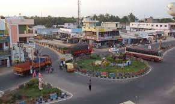
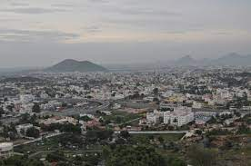
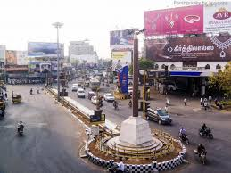
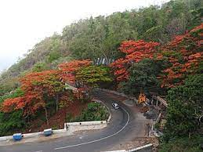

Salem is a major city in Salem district, located on the banks of Thirumanimutharu river in the Indian state of Tamil Nadu. It is located about 140 kilometres (87 mi) northwest of Tiruchirappalli, 170 kilometres (106 mi) northeast of Coimbatore, 206 kilometres (128 mi) southeast of Bangalore and about 340 kilometres (210 mi) southwest of the state capital, Chennai. Salem is the fifth largest urban agglomeration in the state by population and the fifth largest city in Tamil Nadu by area covering 124 km2(48 sq mi) |
 |
|  | The town and the surrounding hilly regions were part of the Chola dynasty and was part of the trade route with the Roman empire. It was later governed by Poligars, who built temples and forts in and around the city. It was part of the Vijayanagara empire before being captured by Hyder Ali during the early 18th century, after the Mysore-Madurai war. It was ceded to the British in 1768 and the area became part of the struggle between Kongu Nadu led by Dheeran Chinnamalai and the British. Salem became part of Salem district since independence in 1947. Salem district was the first district to be formed in India on 4 April 1792 that spread over 7,530 sq.m comprising the present day Namakkal, Dharmapuri, Krishnagiri. Alexander Reed was the collector of Salem district from 1792 to 1799. |
Salem has a number of Hindu temples. The Kottai Mariamman Temple, dedicated to the goddess Mariamman, has an annual five-day festival during the Tamizh month of Aadi (mid-July to mid-August). The temple's gopuram is made up of seven tiers. Sugavaneshwarar Temple is dedicated to Shiva, and according to mythology the sage Sugha Brahmarishi worshiped here. Arunagirinadhar sang a song about Muruga in the temple, which was built during the 13th century by Mamannan Sundara Pandiyan. Kottai Perumal Temple, Skandhashram, Kothandaramar Temple and Sithar Koil are also in Salem. Oothumalai Murugan Temple, Pandurangan Hill Temple, Kumaragiri Hill Murugan Temple and Kariperumal Karadu Hill Temple are in the hills in Salem. The International Society for Krishna Consciousness (ISKCON) has built a temple in Karuppur, near the city. Salem Ramanujar Manimandapam is located near Erumapalayam. |
 |
|  | Thattu vadai settu is a savory snack and popular street food, similar to chat, which originated in Salem and is now also available in Chennai. The sandwich consists of two crunchy thattai discs with fillings such as crispy beetroot, carrot and other vegetables, with green and red chutney as toppings. Norukkal Mix, another snack is smashed murukku mixed with chutney, groundnut, coconut, sliced tomatoes and Chillipowder (Molagapodi). Egg Settu, Murukku Settu and Maanga Settu are the varieties available in thattu vadai settu. |